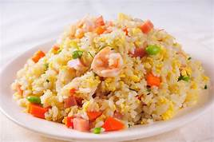

FRIED RICE
(especially in Asian cuisine) rice that is first boiled or steamed then lightly fried in a pan, typically with egg, meat, or vegetables, and served as a main or side dish:.
POT FRIED RICE R710
CHINESS FRIED RICE R220
COCONUT FRIED RICE R153